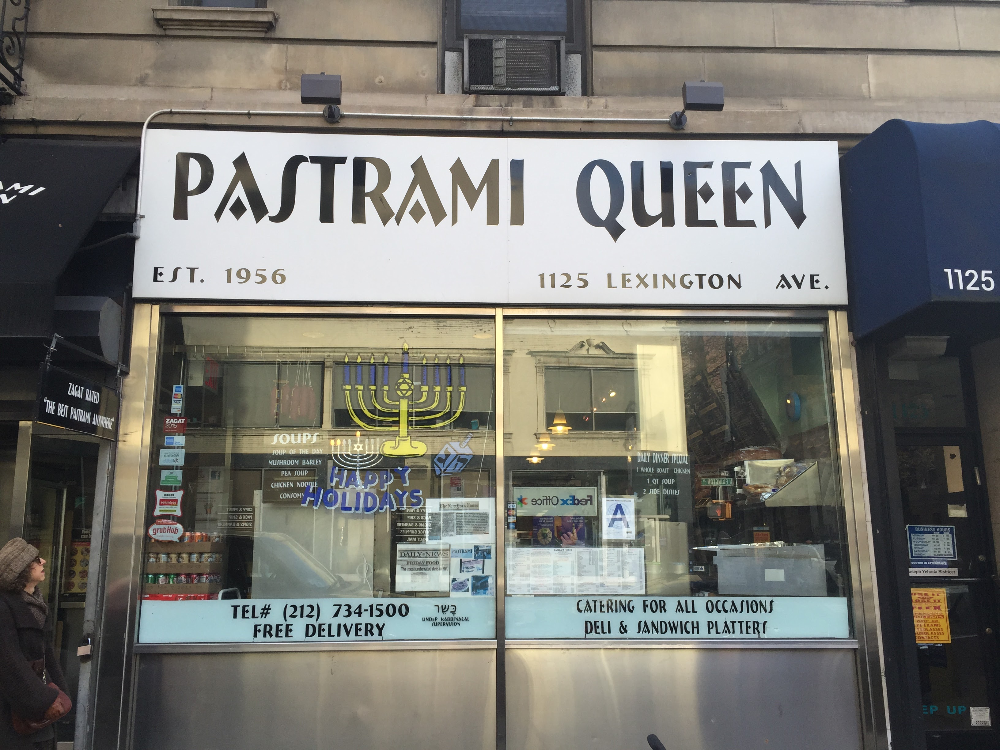
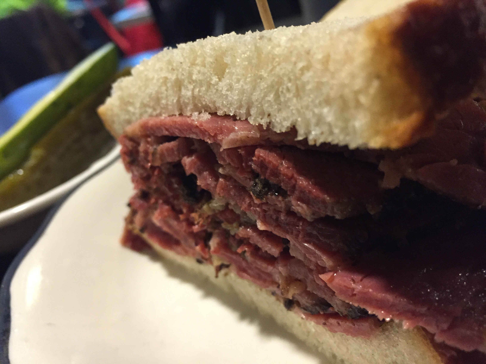
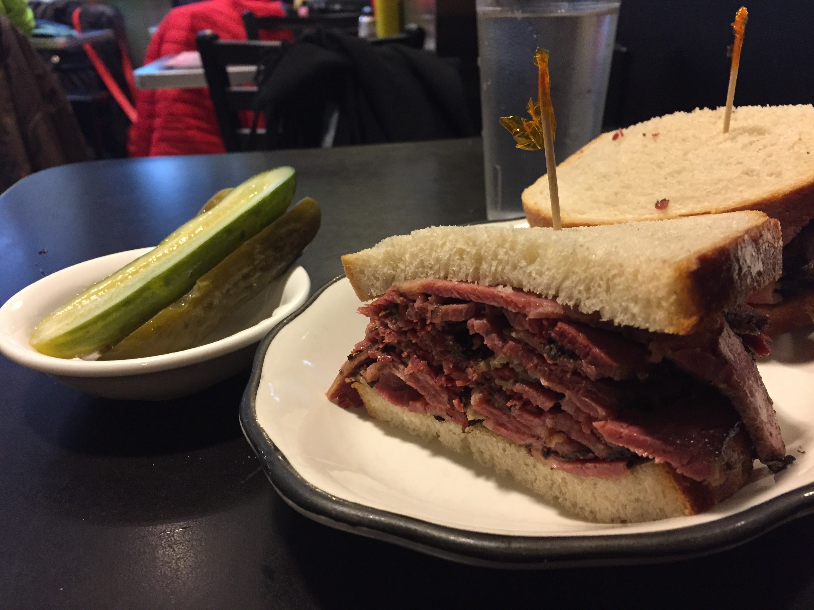

Katz's Delicatessen is a perfectly fine place if what you want is to queue for an hour, pay $30 for a sandwich next to a hundred other people doing the same thing because a website told them to, and eat it under fluorescent lights while someone photographs their food from multiple angles. Katz's is also, for the record, not even a kosher deli. It hasn't been since 1910.
Pastrami Queen has been on Lexington Avenue since 1956. It's kosher. It's quiet by New York standards. The sandwich arrives and you understand immediately why it has lasted this long.

The sandwich. The pickle. That's it.
The sandwich
The pastrami is hot, thick-cut, properly fatty, properly spiced. The rye bread is good. The half sour pickle arrives in a small bowl alongside and it is the correct pickle — crisp, garlicky, not sour enough to pucker, just enough to cut through the meat. This is not a complicated experience. It is a correct one.
"You want a proper pastrami sandwich and a half sour pickle like a normal person? Pastrami Queen."
— Dave
The room is small, the tables are close together, the menu is what it should be. You order at the counter. Nobody asks how you heard about them. Nobody is filming a review. The people eating around you are from the neighbourhood or they know the neighbourhood — and that is the entire point.


The crust on the outside, the fat running through the middle. That's the whole story.
The verdict
New York has spent twenty years sending people to the same three delis while places like this continue to do what they've always done, for people who actually want it. Go to Pastrami Queen. Order the pastrami. Eat the pickle. That's the tip.
The tip
Order: Pastrami sandwich on rye. Don't overthink it.
The pickle: Half sour, comes with the sandwich. Eat it.
Kosher: Yes, properly. Unlike the famous one downtown.
Getting there: 1125 Lexington Ave at 78th St. 6 train to 77th Street.
Est. 1956. Zagat-rated best pastrami in New York. Doesn't need to advertise it.